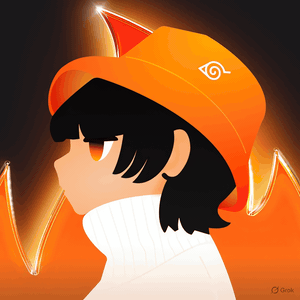

Two products on opposite ends of the same business: the tool a Customer Success Manager uses to keep a client healthy, and the app a person in therapy uses to keep going.
YourDOST sells care to companies and colleges, and earns its renewal when people actually use it. Usage breaks in two places: the CSM doesn’t notice a client slipping in time, and the user doesn’t come back after a hard week. I designed for both breaks.
Every account is scored by the cost of waiting a day. The CSM sees three things to do first, each with one reason and one action.
History becomes “your Journey”: what’s next first, chapters of how far you’ve come, and gentle patterns of what seems to help.
The problem
A CSM looks after about 30 accounts. The signals that one of them is slipping are spread across the CRM, usage dashboards, campaign sheets and email. Mornings go on assembling the picture, and by the time a pattern is obvious the renewal conversation is already hard.
What I learned
Decisions and trade-offs
| Decision | Rejected alternative | Why |
|---|---|---|
| Cap “Do first” at three | Show every flagged account | If everything is urgent, nothing is. Overflow drops into “Also today” with an Urgent tag, so nothing is hidden. |
| Why → evidence → action on every card | A health score and a chart | It follows the order a CSM thinks in. Actions are verbs (“Send assets to Dean”), never “View”. |
| Evidence matched to the signal | The same line chart everywhere | A late follow-up gets a 14-day strip, a campaign gets progress to goal. A rising 12% stays neutral, not green, because it’s still far below target. |
| One merged queue | Separate Risk, Engagement, Follow-up and Campaign views | Type becomes a tag, not a place to navigate to. One list answers “where do I start?”. |
| Snooze needs a reason | A plain snooze button | “Waiting on client” and “Tomorrow” mean different things to the team and to the ranking. |
| Show the ranking rules | A black-box model | “How is this ranked?” and “Not relevant?” build trust, and feed the model better data. |
How I’d know it works
Time from login to first action. Share of “Do first” items actioned the same day. Renewal saves on accounts that were flagged. And the “Not relevant?” rate, which tells us whether CSMs trust the ranking.
The problem
Today’s History tab lists sessions and logs in date order. For someone in therapy it reads like a record of how often they didn’t show up, and it is usually opened right after a gap, at the worst possible moment.
Median 30-day retention of mental-health apps. Most people try once and drift.Baumel et al., Journal of Medical Internet Research, 2019
What I learned
| Screen | What it holds | Question |
|---|---|---|
| 01 Home | Companion, “Day 24”, the next session, today’s reflection, the week in faces | What’s next for me? |
| 02 Check-in | A sheet, once a day, only if you haven’t checked in | How am I right now? |
| 03 Timeline | Named chapters with summaries, grouped by day | How far have I come? |
| 04 Patterns | The week chart, opt-in insights, moments reached | What seems to help? |
| 05 Moment | Your own takeaway, a next step, who can see it | What did I take from this? |
Decisions and trade-offs
| Decision | Rejected alternative | Why |
|---|---|---|
| Chapters with summaries | An infinite feed | A narrative (“Finding a rhythm”) is easier to reflect on than 200 rows, and older chapters fold away. |
| “Day 24”, days since starting | A streak counter | A gap never resets anything. Coming back is celebrated: “You came back, and that counts.” |
| Check-in as a once-a-day sheet | A mood card on Home | A card with a face already selected reads like a record, not a question. “Not now” silences it until tomorrow. |
| Faces from Heavy to Great | Great first | It reads like a scale, matches the chart, and removes the pull to tap “Great” just to get through. |
| A seven-bar week, faces on top | Dot matrix, gauge and spectrum (my first version) | Four encodings were too much on a heavy day. Taller is lighter, and the face says how it felt. |
| Insights say “seems to help” | Confident recommendations | “3 of 4 times · from your check-ins” is honest evidence, not a diagnosis, and can be switched off. |
| Journal entries locked and blurred | Open titles | Safe to open over a shoulder. Employers and colleges only ever see anonymous totals, and the app says so. |
One iteration, start to finish: the mood chart
How I’d know it works
Return rate after a gap of a week or more. Tap-through on the next session and today’s reflection. The insight opt-out rate, where a high number means the tone is wrong. And one interview question: “did anything here make you feel judged?”
Moodboards, early layouts and the core pieces: the face set, cards and colour roles.
A sparring partner. I pressure-tested UX decisions, critiqued screens against the brief and explored many variations fast.
The prototype is real HTML, CSS and JS: working sheets, live states, 60fps motion and reduced-motion support.
Working AI-native changed the economics of iteration. The mood chart went through four complete, clickable versions in one sitting, judged on a real screen rather than in a description. Before submitting I ran a UX and brief-coverage audit with Claude, which caught details such as session counts that didn’t add up across screens. The speed came from AI; the decisions, and the reasons behind them, are mine.
Left out on purpose
Streaks, badges and leaderboards, because care shouldn’t feel like performance. Numeric mood scores on the timeline, because assessments belong with a professional. Guilt-driven push nudges. Sharing, until there’s a consent-first way to share a chapter with your own therapist.

I’m Chaitanya Sai, a Senior Product Designer at Equal AI, and previously Product Designer 2 at Jio Fynd. I’m a CS graduate turned designer with 4+ years of experience. I design in Figma, iterate in Claude and ship working prototypes with Claude Code, turning messy, human problems into calm, clear products.